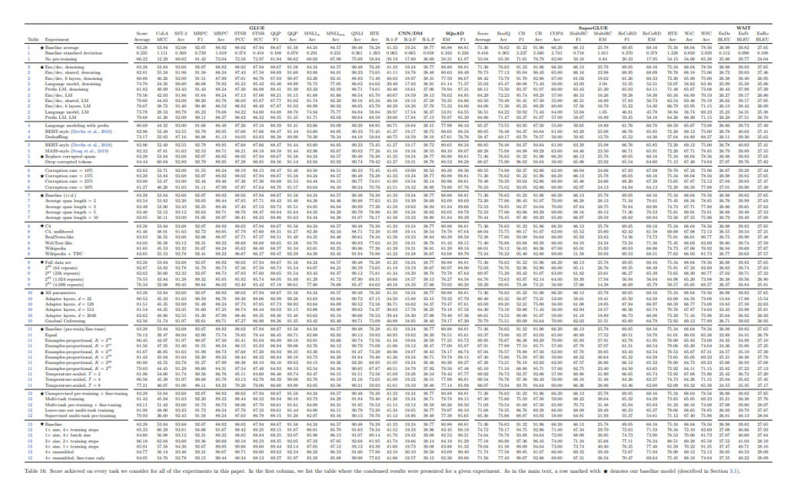
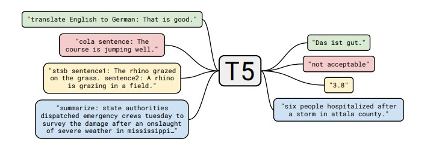
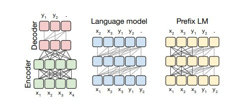
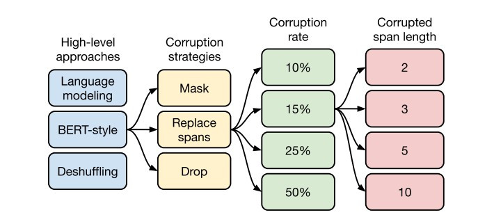
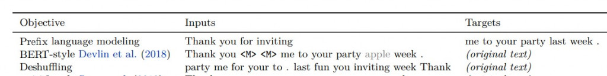

【day19】找到文章的重點-T5( Text-To-Text Transfer Transformer)(上)
發布日期: 2022-09-23 18:29:11
原文連結: https://ithelp.ithome.com.tw/articles/10296626
NLP四大任務
我們在NLP任務當中，可以大致上分為四種:
第一種是分類任務，在分類中資料通常都是文本與相對的label，這類任務會找到文本之間的關係，並通過softmax(多分類)、sigmoid(二分法)來當作輸出的激勵函數，得到最後的結果。
第二種是自然語言生成(Natural Language Generation)，我們在分類任務中資料都是文本與label，在生成任務中就是把label從數字更換成文本資料而已。使用前面的文本資料，來預測後面的文本資料出現的機率，這任務的輸出通常都只是一種文字的分布機率，而不是一個確定的結果。
第三種則是文本相似度檢測(content similarity detection)，文本相似度檢測其實與分類任務的做法相似，分類是使用embedding的結果並通過激勵函數計算出一個確定的結果，而文本相似度檢測是使用embedding的結果，並通過數學式計算，兩個文字或句子之間的高維空間距離，距離越相近的文字相似度就越高。
第四種是序列標註任務(Sequence Tagging)，這個任務會先輸入的文本資料，將每一個文字都手動增加詞性在裡面，例如我喜歡蘋果就會被標註成 [名詞 我] [動詞 喜歡] [名詞 蘋果]。之後留下文字的詞性當作輸出，來完成標註任務。
為什麼要先介紹NLP四大任務呢?因為今天要介紹的T5模型，它將所有的NLP任務引入到一個統一的架構中，意思就是只需一個模型就能夠完成所有NLP任務。
T5簡介
T5( Text-To-Text Transfer Transformer)，是google在發布BERT一年後所開發出來的預訓練模型，這個模型與BERT相同，狠狠的刷新了GLUE、SuperGLUE等多個資料集的榜單，就算過了3年的時間也還在SuperGLUE的排行榜上位居第8，與第1名相差了1.9%的準確率。可見這模型的效能非常的強大。
這個模型強大的原因很簡單，就是與GPT相同，使用大力出奇蹟的方式，作者們從Common Crawl網站每個月爬取資料並且整理出了一份容量高達750GB的訓練數據，取名為C4(Colossal Clean Crawled Corpus)，我們知道GPT2使用了40GB的訓練數據，而T5卻使用了將近19倍的訓練資料來完成這個模型。

圖片皆引用自T5論文:https://arxiv.org/pdf/1910.10683.pdf
當然只有數據是沒有用的，還要有一個良好的訓練方式，我們剛剛提到NLP的四大任務，都很難用一個模型來達成，最主要的問題是，encoder與decoder之間要將資訊拼接起來是有一定難度的。所以作者們在製作T5模型時，用了這750G的數據共做了70幾種的實驗方式(上圖結果)，將每個語言問題轉換成文本到文本(text to text)的方式。

T5在實際使用時text to text前都需要加入一個任務的名稱，來判別任務的需求，像是圖片中的範例英文轉換成德文，我們必須將原始的輸入文字前加入:translate English to German，假設我們想要的輸入英文是That is good，那對應的label就是Das ist gut。
不過你可能在想text to text 要怎麼做分類任務?其實很簡單，我們直接把整數的label當作文字就好，這樣也不需要再去做one-hot-encoding了。
T5的實驗方式
T5在技術上其實並沒有一太多創新的方式，而是通過分析當時比較有名的預訓練模型的訓練方式，並且經過實驗找到最適合的架構，在這邊分成了兩種區塊去做實驗，分別是:文本的遮蔽方式與transformer架購。
transformer架構

在原論文中大致把transformer模型分成了3種:
第一種是encoder-decoder架構，這種架構我們在【day16】NLP的首選模型Transformer介紹，時完整的介紹過了，這架構就是透過encoder學習我們輸入的資料，並且將學習過後的狀態給decoder做使用，這模型的缺點也蠻明顯的，就是decoder無法看見我們輸入的資料，完全依靠encoder學習到的資料來當作decoder的輸入。
第二種是只使用了decoder的部分，我們在【day17】假消息辨識-BERT(Bidirectional Encoder Representations from Transformers)(上)就提到了這個架構的問題，就是只能通過前一個文字的結果來推敲下個文字機率，所以效果自然很差。
第三種就比較特殊了，剛剛提到encoder-decoder的架構中，因為decoder無法看到我們的輸入，所以沒辦法考慮到更多的資訊。我們可以想像第三種transformer是BERT與GPT的混和版本，encoder可以看到一部份的完整輸入，decoder看見一部分先前的消息(而不是通過encoder)，最後再將兩個模型組合起來。
作者們最後得到的結論是encoder-decoder的架構中最適合T5，當然其他兩種的架構不一定是一個錯誤的方法，這些架構直到了現在還是有很多不錯的成績，實驗結果僅能代表T5不適合這個架構而已。
文本的遮蔽方式

一個好的模型，一定要有一個好的資料處理的方式，這一點在BERT當中已經幫我們證實過了，所以在T5中對文本的遮蔽方式用了非常多的技巧來找到最好的結果，在這裡又將實驗過程分成了
高級方法(High-level approaches)、破壞方式(Corruption strategies)、破壞率(Corruption rate)、破壞長度(Corruption span length)。
高級方法(High-level approaches)
語言模型法(Language modeling):這個方式與先前提到了很多次，這方式與GPT2方法相同，直接當作文本閱讀，從左側文字來預測右側文字
BERT-style法:這個方式就是跟BERT一樣，直接遮蔽或替換掉某些文字
順序還原法(Deshuffling):隨機將文本打亂最後想辦法還原出來。
在這邊是BERT的方式獲勝，不過我覺得順序還原法蠻有趣的，這很像我們在國中高中時，寫考卷會看到的文字重組，如果真的能完美的把文字重組回來，那我覺得效果會比BERT的方式還要來的佳，我認為在這裡會輸給BERT的原因主要是作者把文字打太亂了，我們來看一下作者的範例。

Thank you for inviting me to your fun party last week.
變成
party me for your to . last fun you inviting week Thank
這種打亂方式不用說是電腦，就算是人類也可能也會看不懂，雖然我們常常聽到順序不影響文字的閱讀，但僅限於一小部分的序列遭到變更，但官方的範例中，卻是將整個文本的順序打亂，導致毫無邏輯可言，這是我認為比較可惜的地方。
破壞方式(Corruption strategies)
剛剛提到上一輪獲勝的是BERT-style所以在這一輪之中，要來去對原始的BERT破壞方式做變更。
Mask法:這個方式與BERT相同，只不過是將[MASK]轉換成[M]這個特殊標籤而已。
替換法(Replace span):這種方法會將隨機替換掉單字並且以不同的特殊符號來表示，例如:替換掉第一個字用[X]表示，替換掉第二個用[Y]表示。
丟棄法(Drop):如同字面的意思，隨機丟棄文字。
在這一輪就變成了替換法的勝利而不是原始BERT的方法了，這也是許多人在討論的地方，因為BERT的MASK效果還不夠好，所以在後續衍生出了許多MASK方式。
破壞率(Corruption rate)
接下來就是決定要以多少的機率來替換掉這些文字，在這邊做了4個數值的實驗，分別是10%、15%、25%、50%，在這一輪勝出的機率與BERT相同都是15%。
破壞長度(Corruption span length)
最後是破壞長度，與破壞率相同也使用了4個數值的實驗，分別是2、3、5、10，實驗結果是一次破壞3個單字會是最好的效果。
看到了這邊，恭喜你~你已經讀完了一篇T5論文的精簡版，看完了之後是不是覺得T5使用的方法很多都是舊有的技術，只是通過大量的實驗來找到最佳的方式，但也是這種簡單暴力的方法，才能跳脫正常邏輯思維，使結果超乎我們的想像，所以我們明天來玩玩看T5這個模型吧。